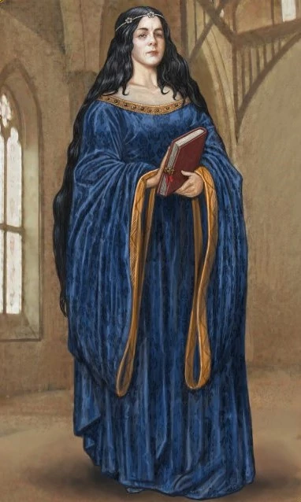
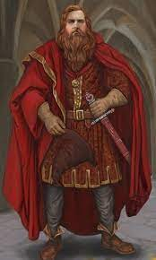
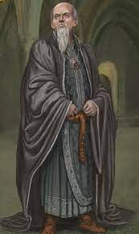
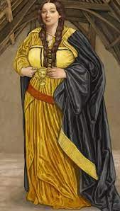

| Hogwarts founders | About |
|---|
| Rowena Ravenclaw |
Rowena Ravenclaw was one of the smartest witches of her time. The students in Ravenclaw are picked for the same traits she had: Wisdom, Originality, Creativity and Intelligence. Ravenclaw was a Scottish witch and one of the four founders of Hogwarts School of Witchcraft and Wizardry. She was noted for her intelligence and creativity. Ravenclaw died sometime in the eleventh century, after she fell fatally ill.
|
| Godric Gryffindor | Godric Gryffindor was an English wizard and one of the four founders of Hogwarts School of Witchcraft and Wizardry. He was great friends with Salazar Slytherin, but opposed him when he later thought that they should not accept Muggle-born students at Hogwarts. It is unknown when he died. In his honour Gryffindor's birthplace became known as Godric's Hollow. Godric Gryffindor's portrait still remains at Hogwarts.
|
| Salazar Slytherin | Salazar Slytherin was a pure-blood wizard, noted for his cunning and determination. He was regarded as one of the greatest wizards of the age, respectively as a Parselmouth and as a skilled Legilimens. Slytherin was one of the four founders of Hogwarts School of Witchcraft and Wizardry along with Godric Gryffindor, Helga Hufflepuff and Rowena Ravenclaw. He was also the namesake of the Slytherin House. |
| Helga Hufflepuff | Helga Hufflepuff was a Welsh witch and was one of the four founders of Hogwarts School of Witchcraft and Wizardry. While the other founders chose to have special students, she accepted them all without preference, although she did want them to be loyal and hard-working. Helga's portrait remained at Hogwarts by at least the 1980s. |